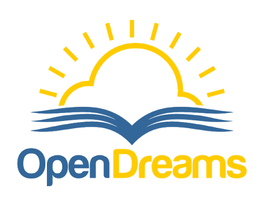

In September 2020, I joined Open-Dreams -an organization aimed at equalizing access to educational opportunities,
(Link). There, day after day, I improve my communication skills, public speaking, and essay writing skills. I also developed additional skills such as blog posting and article writing.
I attended a two weeks preparation organized by Open-Dreams to prepare its members for the Scholastic Assessment Test (SAT), after which I was able to grasp some reading and math tips to perform well at the exam. After taking the SAT, I decided to follow online courses to improve my knowledge of computer science.
While at Open-Dreams, I got selected for participation at its Hackathon, which had the theme Hacking into COVID-19. I worked with the team on developing the project; this instilled in me the spirit of teamwork and leadership. Also, the project made me discover my potentials as far as critical thinking is concerned. We designed the prototype of an APP using FIGMA then we detailed the different functionalities embedded in it. Aimed at helping students overcome the problems caused in their studies due to COVID-19, our App was up to the task and helpful as we finally won second prize at the competition.
I have engaged in a great number of projects, initiatives and programs led and organised by other Open Dreams Scholars and even other prominent leaders in our community. Participating in these projects, seminars, webinars etc. have change my mindset and made me a better person.
I recently took part in the selection and admission process of the new pre-scholars of the 2021 cohort. In the shoes of a scholar, I had to work in the database, registering each applicant, isolating their files and documents, certificates, recommendation and eventually parental concerns. I assisted in the selection process, sending out emails and messages to invite the applicants for interview. After this, we had to conduct the interview; both in-person and on zoom. This was a very tedious task -we had to interview more than 70 applicants. After this long and very stressful process, we could finally proclaim the results and welcome the new breed of scholars.
Today, I am a facilitator and mentor to the pre-scholars at the Open Dream Summer Academy. I make sure I transmit my knowledge and expertise to the pre-scholars.
